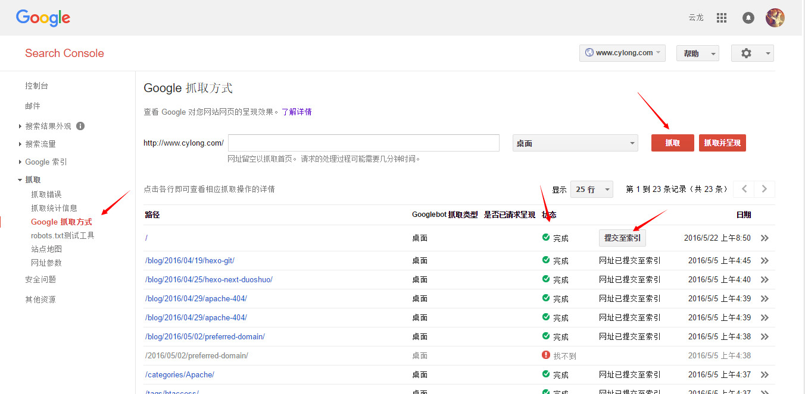
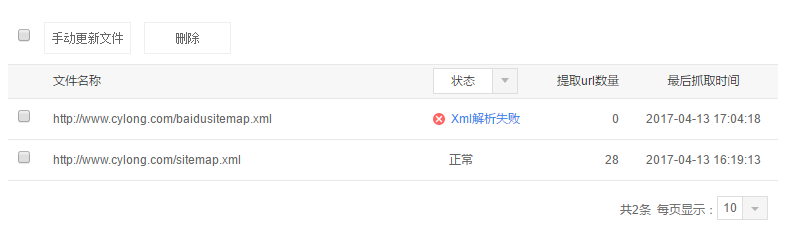

搭建完自己的博客或者有一个自己的网站什么的，总想着能在 Google 或者是百度里搜索到吧，这样就可以提高你的网站的知名度，说不定还会结 ♂ 交到志同道合的小伙伴呢 (●’◡’●)。下面就讲解下如何让自己的网站被搜索引擎收录~
Google 搜索
- 点击 Google 网站站长，然后点击首页的
SEARCH CONSOLE。 - 添加你的网站，进行人机验证【就是证明这个网站是你的】。
- 进入到
抓取->Google 抓取方式。 - 点击
抓取或者抓取并呈现。 - 若提示完成或者部分完成，则可以将网址
提交至索引，有两种提交方式：仅抓取此网址、抓取此网址及其直接链接。都有次数限制。 - 等待一会，打开 Google，在搜索栏输入
site:www.cylong.com【换成你的域名】，就可以看到你网站的内容了~

百度搜索
- 点击 百度站长平台，登陆。
- 添加你的网站，进行人机验证。
- 点击
抓取诊断判断百度是否能够抓取到你的网站【我的博客部署在 Github 上，结果 Github 禁止百度抓取 ( ╯□╰ )，如何解决请参考：解决 Github Pages 禁止百度爬虫抓取的问题】 - 点击
链接提交，这里有很多种提交方式，各有各的优点，也有详细的说明。自己选择吧【实在不会就直接手动提交】 - 我使用的是自动提交方式，Hexo 的 Next 主题已经部署了自动推送的代码，我们只需在主题配置文件中找到
baidu_push字段 , 设置其为true即可。 - 等待一会，打开百度，在搜索栏输入
site:www.cylong.com【换成你的域名】，就可以看到你网站的内容了~
其他的搜索引擎
其他的搜索引擎我用的也比较少，不过如果你的网站不知道什么时候也会被其收录的，我试了一下，我的博客的首页就被 Bing 收录了，当然你想像上面的那些方法在各个搜索引擎中管理你的网站也是可以的，然而我并没有闲心管那些【我猜测基本都是差不多的】，有兴趣的小伙伴可以自己试一试。
搜索引擎优化(SEO)
搜索引擎优化（英语：search engine optimization，缩写为SEO），是一种通过了解搜索引擎的运作规则来调整网站，以及提高目的网站在有关搜索引擎内排名的方式。由于不少研究发现，搜索引擎的用户往往只会留意搜索结果最前面的几个条目，所以不少网站都希望通过各种形式来影响搜索引擎的排序，让自己的网站可以有优秀的搜索排名。当中尤以各种依靠广告维生的网站为甚。
注意： 此文章是以 Hexo 搭建的博客为基础，某些插件只支持 Hexo 搭建的博客，如果是其他博客，请寻找支持自己博客的插件或者自己实现。
添加 robots.txt
robots.txt 可以告诉搜索引擎你网站的哪些页面可以被抓取，哪些页面不可以被抓取。将 robots.txt 放置在 source 根目录下。以下是我的 robots.txt：
1 | User-agent: * |
添加网站地图(Sitemap)
Sitemap 上面放置了网站上需要搜索引擎抓取的所有页面的链接，有助于搜索引擎抓取你的网站，清晰了解网站的架构，益于 SEO 优化。
安装 Hexo 的 sitemap 插件
1
2npm install hexo-generator-sitemap --save # 适用于提交给 Google
npm install hexo-generator-baidu-sitemap --save # 适用于提交给百度在站点的
_config.yml添加以下代码：1
2
3
4sitemap:
path: sitemap.xml
baidusitemap:
path: baidusitemap.xml配置成功后，在你执行
hexo -g的时候，在 public 文件夹【也就是你的站点根目录】就会出现 sitemap.xml 和 baidusitemap.xml。然后在 robots.txt 中添加如下代码：robots.txt 1
2Sitemap: http://www.cylong.com/sitemap.xml
Sitemap: http://www.cylong.com/baidusitemap.xml第三步中搜索引擎在抓取到 robots.txt 的时候会自动抓取站点地图。你还可以手动提交给 Google 和百度，都是带有提示的傻瓜式操作，相信大家都能解决吧(●’◡’●)
- Google： Search Console
- 百度： 百度站长平台
2017-04-13 更新
在我向百度提交站点地图 baidusitemap.xml 的时候提示 XML 解析失败，猜测可能是格式有问题，通过查看 百度sitemap协议都支持哪些格式？ 发现 Hexo 生成的 baidusitemap.xml 确实有问题，不过百度支持上文中生成的 sitemap.xml 格式的 XML 文档，上传这个就正常了。

一些小点子
你在你的各大社交网站的个人信息里贴上你的博客域名【比如知乎、Facebook、Twitter、Github 等等】会提高你网站的访问量哟，还有在各大社交网站上回答有关问题可以附上自己的博客地址，也会增加访问量o(^▽^)o。当然，更重要的还是你的博客要内容丰富精彩，才会吸引更多的人。如果是自己的某个网站什么的，多注意下 SEO 优化也是不错的选择。
参考&感谢
文章标题：如何在 Google 和百度里搜索到自己的网站
文章作者：cylong
文章链接：http://www.cylong.com/blog/2016/05/22/google-baidu-search/
有问题或者建议欢迎在下方评论。欢迎转载、引用，但希望标明出处，感激不尽(●’◡’●)